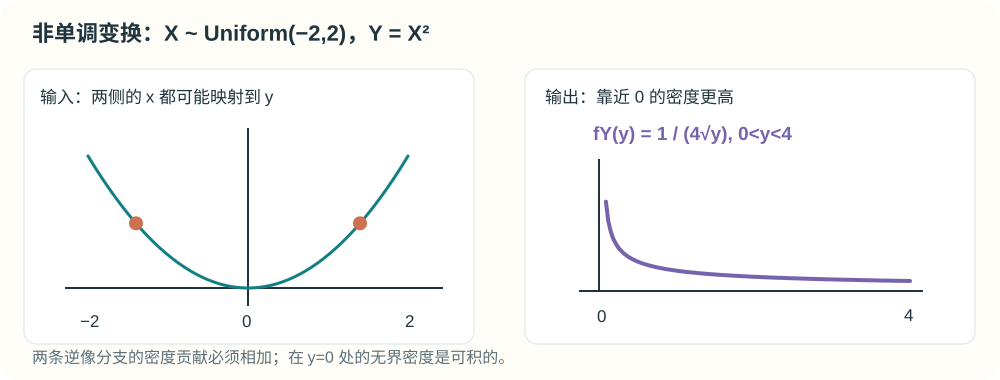
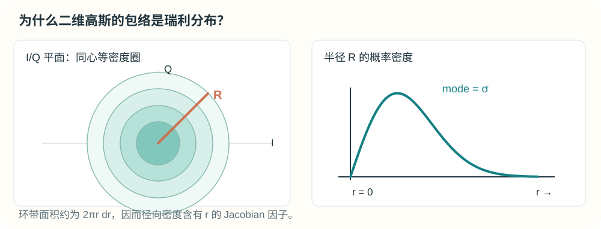
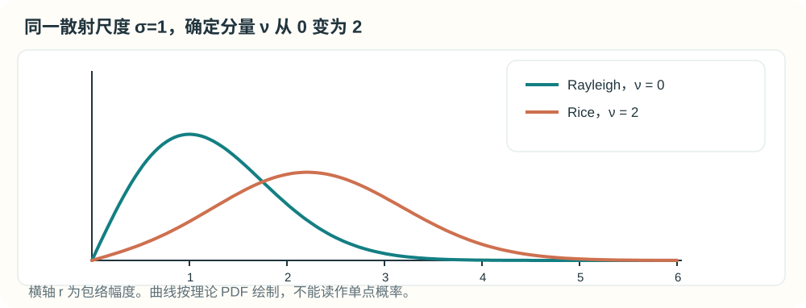
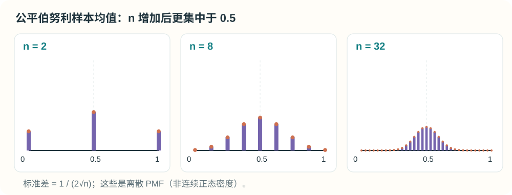

CHAPTER 05 · 概率基础
随机变量函数与极限定理
一次平方变换如何折叠概率密度？I/Q 高斯噪声为什么产生瑞利和莱斯包络？独立求和为何引出大数定律与中心极限定理？逐步让图像、密度与数学证明互相吻合。
- 由 CDF 严格推导单调和非单调的变量变换
- 从二维高斯与极坐标 Jacobian 推出瑞利和莱斯包络
- 区分大数定律的集中性质与 CLT 的标准化分布极限
给信号做一次平方，分布会发生什么？
假设接收端只能看到平方检测器输出 Y=X²，却知道输入电压 X 在 [−2,2] 上均匀分布。输出仍然均匀吗？答案是否定的：靠近 Y=0 的值更密集，因为两个接近 0 的输入都能映射到较小的 Y，而且平方映射会在原点附近把区间压缩得格外明显。
这个例子说明一个重要原则：确定性变换改变了随机变量的取值尺度，也会改变“每单位输出长度”携带多少概率。后半章还会把这个观点推广到 I/Q 包络，并讨论多个随机变量求和时的极限规律。

先用 CDF 推导：最不容易丢掉概率的方法
对 Y=g(X)，从 FY(y)=P(g(X)≤y) 出发，先把关于 Y 的事件转化为关于 X 的集合，再用已知的 X 分布计算它的概率。这个方法在 g 非单调、含平坦区段或输出具有点质量时尤其可靠。
对 X~Uniform(−2,2)，当 0≤y≤4，事件 X²≤y 等价于 −√y≤X≤√y。输入密度为 1/4，因此区间长度为 2√y，CDF 恰好是 √y/2。
输出密度在 y→0⁺ 时发散到无穷大，但该奇异性可积，总概率仍然为 1。PDF 在单个点“无界”不意味着该点有正概率；这里 P(Y=0)=P(X=0)=0。
单调区段的雅可比因子
若 g 在支持集上一对一，连续可微，逆函数可微且导数非零，那么微小区间对应的概率相等：fX(x)|dx|=fY(y)|dy|。所以输出密度必须乘上逆变换导数的绝对值。
若一个 y 有多个普通逆像 xᵢ，则对各个分支相加：fY(y)=Σᵢ fX(xᵢ)/|g′(xᵢ)|。在临界点 g′=0 不能机械代入，需要以 CDF 或极限处理；当 g 在一段具有非零概率的输入区间上恒定时，还会产生输出点质量。
变换公式的边界：“PDF 乘 Jacobian”不是对任意函数都可直接写的一条万能公式。需要先识别原像数目、函数的可逆区段、临界点及可能产生的离散质量。
从 I/Q 高斯变量推导瑞利包络
通信与雷达常把复基带信号写成 I+jQ，包络 R=√(I²+Q²)。若 I、Q 独立且都服从 N(0,σ²)，它们的联合密度只与半径有关。极坐标变换 I=r cosθ、Q=r sinθ 的面积 Jacobian 是 r；再把相位 θ 从 0 到 2π 积分，就得到瑞利分布。

积分给出 CDF FR(r)=1−exp(−r²/(2σ²))（r≥0），所以对包络门限 γ≥0，超门限概率 P(R>γ)=exp(−γ²/(2σ²))。在这个模型里，不需要采用“高斯的 3σ 法则”来计算正值包络的尾概率。
仅适用于两路独立、零均值、同方差高斯分量的包络；输出是理论右尾概率。
P(R>γ)=
加入确定分量：从瑞利到莱斯
若 I、Q 仍独立且方差同为 σ²，但均值向量变为 (μI,μQ)，其长度 ν=√(μI²+μQ²) 非零，包络 R 就服从莱斯（Rice/Rician）分布。把非中心的二维高斯联合密度在极坐标下对角度积分，会出现第一类零阶修正贝塞尔函数 I₀。

在常见的复基带归一化下，莱斯 K 因子为确定分量功率与随机散射分量平均功率之比，即 K=ν²/(2σ²)。“瑞利=一定没有视距”“莱斯=一定存在视距”只是常见通信建模语境中的解释，不是单凭观测包络就能证明传播路径结构。散射分量偏离独立同方差高斯时，也不必服从这两种分布。
一个无需贝塞尔函数的可验证结论
无论 ν 是 0 还是非零，若 R²=I²+Q²，则 E[R²]=2σ²+ν²。这个恒等式把 Rice/Rayleigh 两个模型的“均方包络”连接到 I/Q 分量的方差与均值，便于检查仿真能量归一化是否一致。
求和为什么对应特征函数相乘？
两个独立随机变量 X、Y 求和得到 Z=X+Y。因为 eⁱᵗ⁽ˣ⁺ʸ⁾=eⁱᵗˣeⁱᵗʸ，并且独立性允许乘积期望拆分成期望的乘积，故：
若 X~N(μ₁,σ₁²)、Y~N(μ₂,σ₂²) 且相互独立，则它们的特征函数相乘后仍是高斯特征函数，所以 Z~N(μ₁+μ₂,σ₁²+σ₂²)。不独立时，虽然均值仍相加，方差一般会含协方差项，不能沿用简单的 σ₁²+σ₂²。
大数定律与中心极限定理，各回答一个不同的问题
考虑独立同分布的伯努利变量 X₁,…,Xₙ，成功概率 p=1/2，样本均值记为 X̄ₙ。它的期望始终为 1/2，方差是 1/(4n)。当 n 越大，样本均值落在 1/2 附近的概率越高——这是大数定律讨论的集中。中心极限定理讨论的是：若把剩余波动按 √n 放大并标准化，分布会趋近什么形状。

弱大数定律在伯努利例子中可以由方差和切比雪夫直接证明：P(|X̄ₙ−1/2|≥ε)≤1/(4nε²)，当 n→∞ 趋向 0。中心极限定理则更进一步描述标准化后剩余波动的分布形状。它们不能简单合并成“样本数一大，任何分布都变高斯”：强相关、无限方差和极端偏斜等情形都需要额外分析。
没有通用的 n=30 保证：正态近似的好坏依赖原分布形状、尾部、目标概率和统计量。小样本下可以使用精确二项概率；重尾或依赖样本需要不同理论，不能机械套用 iid CLT。
可复现实验：把理论数值算出来
下面使用 Python 标准库精确计算平方变换 CDF、Rayleigh 尾概率和有限 n 的伯努利样本均值方差，不依赖随机种子或观察某一次偶然模拟。
import math
# X~U(-2,2), Y=X²
fy = lambda y: 0 if y < 0 else (1 if y > 4 else math.sqrt(y)/2)
assert math.isclose(fy(1), .5)
# I,Q iid N(0, sigma²); R threshold in units sigma
tail = math.exp(-2**2/2)
assert math.isclose(tail, .1353352832366127)
# sample mean of n iid Bernoulli(1/2)
n = 32
var_mean = 1/(4*n)
assert math.isclose(var_mean, .0078125)
# Rice envelope energy identity, nu=2, sigma=1
assert 2*(1**2) + 2**2 == 6
自检：为什么 Y=X² 的 PDF 在 y=0 附近很高？
因为输入的两个区段同时折叠到正输出，而且 g′(x)=2x 在原点趋近零，相应的单位输出区间汇集了更长的输入区间。密度可以趋向无穷大，但该点概率仍为 0。
自检：大数定律是否等于“样本均值恰好等于均值”？
不是。它描述在 n 增长时偏离固定 ε 的概率趋向 0；有限样本仍可能偏离，而中心极限定理刻画的是缩小后的典型波动尺度和形状。
参考与核查依据
- Statistics LibreTexts · Transformations of Random Variables：CDF 变换与多分支密度公式。
- SciPy · Rayleigh Distribution：瑞利 PDF、标准化与参数约定。
- SciPy · Rice Distribution：非中心二维高斯包络与修正贝塞尔函数。
- MIT OCW · Theory of Probability, Lecture 15：特征函数与中心极限定理。
- MIT OCW · Inference & Limit Theorems：大数定律与概率界。